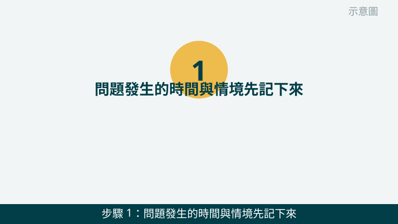
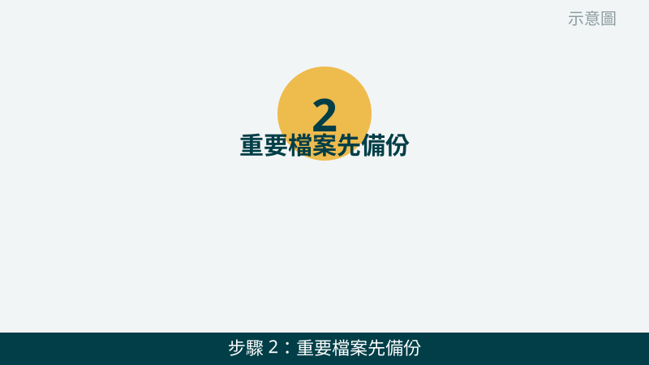
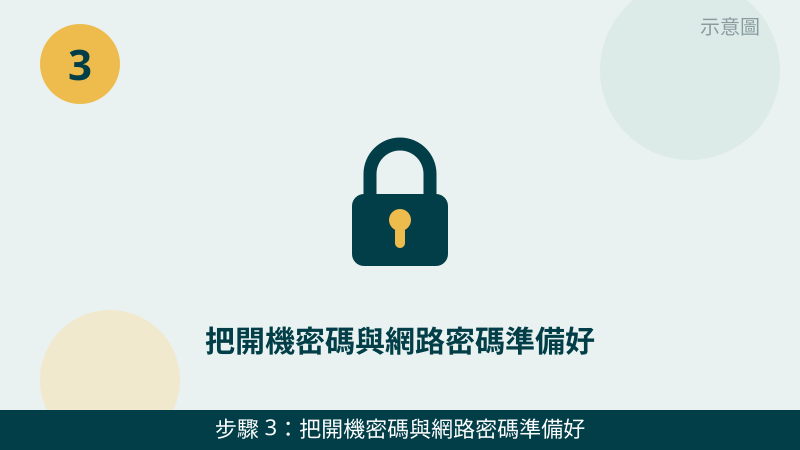
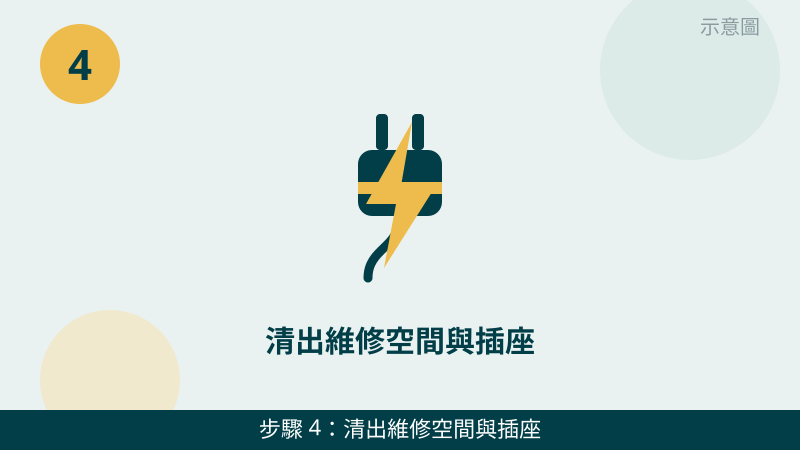
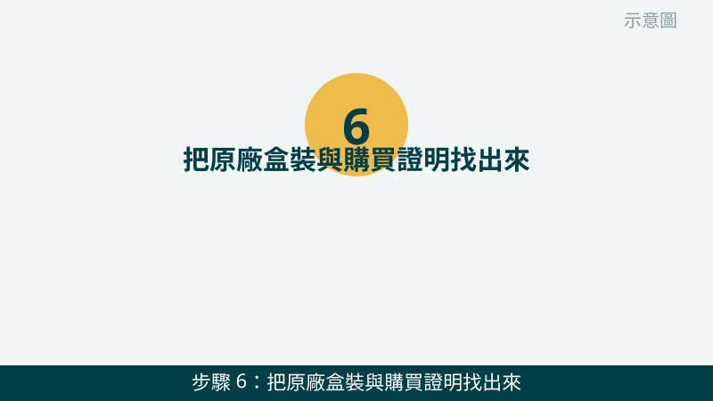

請您放心，到府維修前的準備一點都不難，重點是「讓技師到府後不用再等您找東西」。下面 6 步照順序做完，檢查會快很多，問題也比較不會被漏掉。
開始之前先跟您說明一個原則：「先記下來、再備份、最後才清空間」。問題描述先記好，資料先備份好，現場空間最後清出來，這個順序最不容易出錯。
維修前先傳問題照片給我們看
把故障畫面、錯誤訊息拍下來傳 LINE，先免費評估、報價透明，確認後再預約到府維修。
到府維修前準備清單（6 步）
- 1. 問題發生的時間與情境先記下來。請先拿紙筆或手機記事本寫下：什麼時候開始出問題、是開機就出問題還是用到一半才出問題、最近有沒有裝新程式或更新、有沒有摔到或淋到水。怎麼判斷：寫得出「什麼時候、在做什麼事時發生」，技師就能更快鎖定方向；只寫「電腦壞了」，檢查就得從頭慢慢試。

示意圖（非官方截圖） - 2. 重要檔案先備份。請先把照片、文件、工作檔案複製一份到外接硬碟、隨身碟或您平常在用的雲端空間，備份完打開複製好的檔案確認真的打得開。怎麼判斷：備份的檔案能正常開啟，才算備份完成；只看到檔名、還沒點開確認過，都不算完成。如果您不確定怎麼備份，請先拍照問我們，不要自己亂刪或亂搬檔案。

示意圖（非官方截圖） - 3. 把開機密碼與網路密碼準備好。請先確認您記得 Windows 開機密碼、以及家裡 Wi-Fi 密碼，寫在紙上收好或記在心裡就好。怎麼判斷：您自己能順利登入、能連上網路，就是準備好了。特別提醒您：密碼只當面給技師、不要用訊息傳給陌生人，到府時由您自己輸入最安心，維修結束後建議您再把密碼換掉。

示意圖（非官方截圖） - 4. 清出維修空間與插座。請先把電腦周圍的雜物移開，留出能放工具、能打開機殼檢查的桌面空間，並確認附近有一個空插座能接電源和延長線。怎麼判斷：技師到府後不用再搬東西、插頭一插就能開機測試，就是清好了。桌機在桌子底下的話，也請先把主機移到方便拉出來的位置。

示意圖（非官方截圖） - 5. 寵物與小孩先安置。請先把寵物帶到另一個房間、把小朋友的活動範圍先安排好，避免維修時寵物跑來咬線、小朋友碰到工具或零件。怎麼判斷：維修的房間門能關上、現場沒有會亂跑的小腳丫和小爪子，就是安置好了。這一步是為了大家的安全，也讓檢查不會一直被打斷。
示意圖（非官方截圖） - 6. 把原廠盒裝與購買證明找出來。請先找找看當初的包裝盒、保證書、發票或購買紀錄截圖，有的話放在電腦旁邊一起準備好。怎麼判斷：找得到就一起備著，幫助我們更快確認機型與配件是否齊全；真的找不到也沒關係，不會因此不能維修。請不要為了找盒子去翻很久，找不到就先拍照問我們。

示意圖（非官方截圖）
出現這些情況，就別再自己試了
- 電腦冒煙、有燒焦味、聞到異味或看到火花——請先關機斷電、保持通風，不要再開機測試
- 硬碟傳出「喀喀」異音、檔案打不開或消失——請先停手保資料，不要反覆重開機測試
- 筆電電池鼓起、機身變形——請不要自行拆卸或擠壓，先拍照問我們
- 想自己拆機檢查但不確定怎麼拆——請先拍照問我們，不要硬拆，拆壞排線或卡扣反而更麻煩
- 有人用訊息跟您要開機密碼、驗證碼或帳號密碼——請不要傳給陌生人，等技師到府當面再處理
6 步都準備好之後，您只要把第 1 步寫下的問題描述、連同故障畫面照片一起傳給我們，就能先免費評估方向。如果您正在找電腦到府維修台中的服務，這份清單也能幫您在預約前就把現場準備好。實際維修內容與價格，我們會先報價給您確認，您確認後我們再進行，不會先斬後奏。
常見問題
到府維修前一定要先備份嗎？
強烈建議您先備份。維修過程中有時需要重開機、測試硬碟或重灌系統，事先把照片、文件、工作檔案複製到外接硬碟或雲端，萬一檢測中發現硬碟有問題，您的資料才不會跟著冒險。如果您不確定怎麼備份，請先拍照問我們，不要自己亂刪檔案。
開機密碼和網路密碼可以先傳給技師嗎？
請不要用訊息先把密碼傳給任何人。正確做法是把密碼寫在紙上或記在心裡，等技師到府、當面需要輸入時再由您自己輸入或當面交給技師，維修結束後建議您再把密碼換掉，這樣最安心。
找不到購買證明或原廠盒裝，還能到府維修嗎？
可以，找不到也不用擔心。購買證明和原廠盒裝只是幫助我們更快確認機型、保固狀況與配件是否齊全，有的話先找出來、沒有也沒關係，維修前先把問題照片傳 LINE 給我們免費評估即可。
相關文章：電腦變慢卡頓、開機很久怎麼辦、自救百科總覽